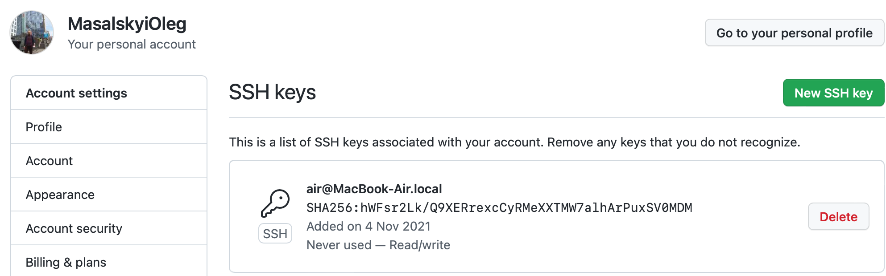

HW 03.11.2021
- git config --global user.name - показує ім'я користувача
- git config --global user.email - показує імейл користувача
- git init - запуск репозиторія в поточній папці
- git status - показує поточний статус
- git add - додає всі файли
- git commit - збереження змін в комміт
- git log - показує список всіх коммітів (від найбільш нового)
- git checkout - переключається на іншу гілку
- git branch - робота з гілками в репозиторії
- git push - заливає поточні локальні комміти на віддалений репозиторій
- git pull - забирає зміни з віддаленого репозиторія в локальний
- git merge - об'єднує гілки
- git clone - клонує проект з віддаленого репозиторія
.gitignore - файл не коммітиться і залишається в локальному репозиторії

Advanced
- git revert - відміна операції без втрати історії коммітів
- git reset - відміна зміни в локальному репозиторії
- git rebase - перенесення змін з однієї гілки на іншу
- git cherry-pick - перенесення конкретних коммітів з одного місця репозиторія в інше
- git stash - відкласти зміни, щоб внести їх пізніше